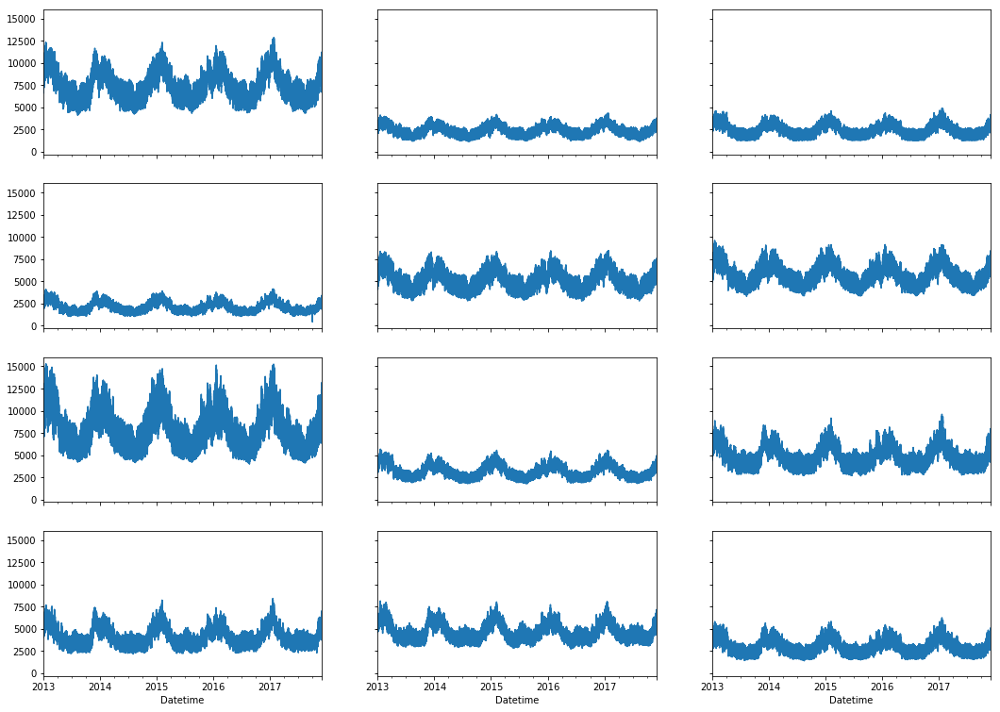
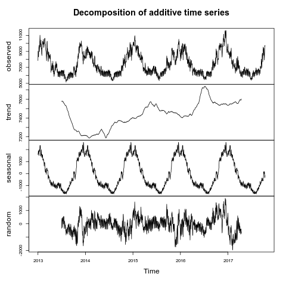
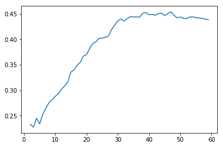

Clustering large number of time series.
Table of Contents
1 Preparing the data
1.1 Reading the data
1.1.1 In Python
I have downloaded all the regions' annual data from 2013 to 2015, the consolidated 2016 data as well as the running 2017 data. The data came split between files for each 12 regions of France and each year, where each record contains the date, the time, the region and the electricity consumption.
I have needed to correct the names of the regions as those where changed (probably by error) on the 29th of February 2016.
http://www.rte-france.com/en/eco2mix/eco2mix-telechargement-en
from os.path import join import glob import pandas as pd data_path = "data" # Combine all the .xls of each region data = pd.concat([ pd.read_table( file, encoding="cp1252", delimiter="\t", engine="python", index_col=False).iloc[:-1, :] for file in glob.glob(join(data_path, "*.xls")) ]) # Format type of variables data["Consommation"] = pd.to_numeric(data["Consommation"], errors='coerce') data["Datetime"] = pd.to_datetime( (data["Date"] + '_' + data["Heures"]).apply(str), format='%Y-%m-%d_%H:%M') # Correct regions names data.loc[data['Périmètre'] == 'Auvergne et Rhône-Alpes', 'Périmètre'] = 'Auvergne-Rhône-Alpes' data.loc[data['Périmètre'] == 'Bourgogne et Franche Comté', 'Périmètre'] = 'Bourgogne-Franche-Comté' data.loc[data['Périmètre'] == 'Alsace, Champagne-Ardenne et Lorraine', 'Périmètre'] = 'Grand-Est' data.loc[data['Périmètre'] == 'Nord-Pas-de-Calais et Picardie', 'Périmètre'] = 'Hauts-de-France' data.loc[data['Périmètre'] == 'Aquitaine, Limousin et Poitou-Charentes', 'Périmètre'] = 'Nouvelle-Aquitaine' data.loc[data['Périmètre'] == 'Languedoc-Roussillon et Midi-Pyrénées', 'Périmètre'] = 'Occitanie' data.head()
Périmètre Nature Date Heures Consommation Thermique \ 0 Normandie Données définitives 2013-01-01 00:00 NaN ND 1 Normandie Données définitives 2013-01-01 00:15 NaN NaN 2 Normandie Données définitives 2013-01-01 00:30 3683.0 432 3 Normandie Données définitives 2013-01-01 00:45 NaN NaN 4 Normandie Données définitives 2013-01-01 01:00 3549.0 433 Nucléaire Eolien Solaire Hydraulique Pompage Bioénergies Ech. physiques \ 0 ND ND ND ND ND ND ND 1 NaN NaN NaN NaN NaN NaN NaN 2 8200 216 0 12 - 54 -5233 3 NaN NaN NaN NaN NaN NaN NaN 4 8224 190 0 12 - 54 -5366 Datetime 0 2013-01-01 00:00:00 1 2013-01-01 00:15:00 2 2013-01-01 00:30:00 3 2013-01-01 00:45:00 4 2013-01-01 01:00:00
As all the regions are in the same columns, I have used a pivot table to get 1 column per region for each 'Datetime' (1 column for each of 12 regions). Additionally, it is important to set the timezone to UTC in order to account for daylight saving time change and avoid removing data or introducing NAs.
# Reshape to row = datetime and column = region, all values are consumption consommation = pd.pivot_table( data, values='Consommation', index='Datetime', columns=['Périmètre']) # Set timezone as it creates problem when changing between daylight saving times. consommation = consommation.tz_localize('UTC', ambiguous=False) consommation = consommation.resample('30T').mean() consommation.head()
Périmètre Auvergne-Rhône-Alpes Bourgogne-Franche-Comté \ Datetime 2013-01-01 00:00:00+00:00 NaN NaN 2013-01-01 00:30:00+00:00 8173.0 2357.0 2013-01-01 01:00:00+00:00 7944.0 2289.0 2013-01-01 01:30:00+00:00 7896.0 2326.0 2013-01-01 02:00:00+00:00 7882.0 2409.0 Périmètre Bretagne Centre-Val de Loire Grand-Est \ Datetime 2013-01-01 00:00:00+00:00 NaN NaN NaN 2013-01-01 00:30:00+00:00 3050.0 2476.0 4943.0 2013-01-01 01:00:00+00:00 2866.0 2319.0 4811.0 2013-01-01 01:30:00+00:00 2735.0 2560.0 4840.0 2013-01-01 02:00:00+00:00 2874.0 2395.0 4897.0 Périmètre Hauts-de-France Ile-de-France Normandie \ Datetime 2013-01-01 00:00:00+00:00 NaN NaN NaN 2013-01-01 00:30:00+00:00 5989.0 9134.0 3683.0 2013-01-01 01:00:00+00:00 5832.0 8822.0 3549.0 2013-01-01 01:30:00+00:00 5926.0 8499.0 3570.0 2013-01-01 02:00:00+00:00 5695.0 8229.0 3569.0 Périmètre Nouvelle-Aquitaine Occitanie PACA \ Datetime 2013-01-01 00:00:00+00:00 NaN NaN NaN 2013-01-01 00:30:00+00:00 5464.0 5228.0 5570.0 2013-01-01 01:00:00+00:00 5422.0 4955.0 5698.0 2013-01-01 01:30:00+00:00 5514.0 4888.0 5680.0 2013-01-01 02:00:00+00:00 5443.0 4881.0 5577.0 Périmètre Pays-de-la-Loire Datetime 2013-01-01 00:00:00+00:00 NaN 2013-01-01 00:30:00+00:00 3595.0 2013-01-01 01:00:00+00:00 3359.0 2013-01-01 01:30:00+00:00 3313.0 2013-01-01 02:00:00+00:00 3383.0
In those 12 time series we can see some outliers at the beginning of September 2017 where the data is close to 0. Those gaps are expected as this data was not yet consolidated.
import matplotlib.pyplot as plt %matplotlib inline fig, ax = plt.subplots(4, 3, sharex=True, sharey=True) fig.set_size_inches(18,13) i = 0 row = 0 for column in consommation.columns: col = i % 3 consommation[column].plot(ax=ax[row, col]) i += 1 if col == 2: row += 1

In order to make sure we are using clean data, I have decided to use the records from the 2nd of January 2013 (1st doesn't have data for midnight) to the 2nd of January 2017.
Furthermore, a second pivot table was used in order to create a column for each 30 minutes of the day. This resulted in a table composed of 576 daily time series (48 for each of the 12 regions) over 1455 days.
import datetime consommation["date"] = pd.to_datetime(consommation.index).date consommation["time"] = pd.to_datetime(consommation.index).time consommation = pd.pivot_table(pd.melt(consommation, id_vars=["date", "time"]), index="date", values="value", columns=["Périmètre", "time"]) # consommation = consommation.loc[datetime.date(2013,1,2):datetime.date(2017,1,2), :] consommation = consommation.loc[datetime.date(2013,1,2):, :] # Get rid of the 15 minutes columns (columns with nans) # consommation = consommation.loc[:,consommation.isnull().sum()!=consommation.shape[0]] consommation.head()
Périmètre Auvergne-Rhône-Alpes \ time 00:00:00 00:30:00 01:00:00 01:30:00 02:00:00 02:30:00 date 2013-01-02 7847.0 7674.0 7427.0 7441.0 7467.0 7550.0 2013-01-03 9028.0 8839.0 8544.0 8560.0 8569.0 8667.0 2013-01-04 8982.0 8754.0 8476.0 8480.0 8453.0 8554.0 2013-01-05 8625.0 8465.0 8165.0 8134.0 8087.0 8149.0 2013-01-06 8314.0 8097.0 7814.0 7791.0 7785.0 7842.0 Périmètre ... Pays-de-la-Loire \ time 03:00:00 03:30:00 04:00:00 04:30:00 ... 19:00:00 date ... 2013-01-02 7434.0 7371.0 7233.0 7311.0 ... 4336.0 2013-01-03 8559.0 8483.0 8390.0 8392.0 ... 4279.0 2013-01-04 8436.0 8386.0 8224.0 8195.0 ... 4181.0 2013-01-05 7974.0 7897.0 7713.0 7597.0 ... 3877.0 2013-01-06 7670.0 7605.0 7418.0 7352.0 ... 3854.0 Périmètre \ time 19:30:00 20:00:00 20:30:00 21:00:00 21:30:00 22:00:00 22:30:00 date 2013-01-02 4228.0 4079.0 3923.0 3756.0 3565.0 3457.0 3510.0 2013-01-03 4166.0 4038.0 3862.0 3712.0 3463.0 3308.0 3394.0 2013-01-04 4123.0 3946.0 3755.0 3597.0 3559.0 3412.0 3456.0 2013-01-05 3786.0 3696.0 3540.0 3449.0 3296.0 3221.0 3296.0 2013-01-06 3834.0 3826.0 3771.0 3631.0 3494.0 3423.0 3420.0 Périmètre time 23:00:00 23:30:00 date 2013-01-02 4003.0 3710.0 2013-01-03 3909.0 3700.0 2013-01-04 3903.0 3662.0 2013-01-05 3864.0 3700.0 2013-01-06 3942.0 3717.0 [5 rows x 576 columns]
With minimal data manipulation, I was able to format the data into 48 daily series for each of the regions and get rid of all the 'missing' values.
print('Data dimensions: ', consommation.shape) print('Number of NA values: ', consommation.isnull().sum().sum())
Data dimensions: (1794, 576) Number of NA values: 0
As you can see, this gives us a matrix of 1794 rows (days) and 576 columns (48 half-hour of each 12 regions per day), with no NA values.
This data is now saved into a csv to read from R.
# Merge multi index column names to read in R consommation.columns = [col[0] + '_' + str(col[1]) for col in consommation.columns.values] # Save to access from R consommation.to_csv(join(data_path, "consommation.csv")) # consommation = pd.read_csv(join(data_path, "consommation.csv"),index_col=[0], header=[0,1])
1.1.2 In R (NOT USED ANYMORE!)
library(tidyverse) library(lubridate)
data <- read.csv("data/all_raw.csv", row.names=NULL, encoding="cp1252") data$Date <- parse_date(data$Date) data$Heures <- parse_time(data$Heures) data$Consommation <- data$Consommation %>% as.character() %>% parse_double(na = c("", "NA", "-")) data <- data %>% select(c("Périmètre", "Consommation", "Date", "Heures"))%>% filter(Périmètre != "France") goodRegions <- data %>% spread(key=Périmètre, value = Consommation) %>% is.na() %>% colMeans() < 0.5 goodRegions<- names(which(goodRegions)) data <- data[data$Périmètre %in% goodRegions, ]
library(xts) data.byPerimetre<- data %>% spread(key=Périmètre, value=Consommation) %>% filter(Date > ymd("2013-01-01")) dates <- as.POSIXct(paste(data.byPerimetre$Date, data.byPerimetre$Heures), format="%Y-%m-%d %H:%M:%S", tz="UTC") regions.xts <- xts(data.matrix(data.byPerimetre[, c(-1,-2)]),order.by=dates) ep <- endpoints(regions.xts, "minutes", k=30) halfHour.xts <- period.apply(na.locf(regions.xts), INDEX = ep, FUN = mean) plot.xts(halfHour.xts)

## From 1st of september 2017, we get 15 minutes measurements data.byPerimetre<- data %>% spread(key=Périmètre, value=Consommation) %>% filter(Date > ymd("2013-01-01")) %>% filter(Date < ymd("2017-09-01")) dates <- as.POSIXct(paste(data.byPerimetre$Date, data.byPerimetre$Heures), format="%Y-%m-%d %H:%M:%S", tz="UTC") regions.xts <- xts(data.matrix(data.byPerimetre[, c(-1,-2)]),order.by=dates) ep <- endpoints(regions.xts, "minutes", k=30) halfHour.xts <- period.apply(na.locf(regions.xts), INDEX = ep, FUN = mean) plot.xts(halfHour.xts)
tHourly <- function(x) { ## print(index(x[1])) # initialize result matrix for all 48 half-hour dnames <- list(paste0(date(index(x))[1]), paste0("H", seq(0,23.5,0.5), rep(colnames(x), each = 48))) res <- matrix(NA, 1, dim(x)[2] * 48, dimnames = dnames) # update result object and return res[,] <- unlist(split(t(x), seq(ncol(x)))) res } # split on days, apply tHourly to each day, rbind results p_mat <- split(halfHour.xts, f="days", drop=FALSE, k=1) p_list <- lapply(p_mat, tHourly) p_hmat <- do.call(rbind, p_list) head(p_hmat[,1:2])
| H0Auvergne-Rhône-Alpes | H0.5Auvergne-Rhône-Alpes | |
|---|---|---|
| 2013-01-02 | 7847 | 7674 |
| 2013-01-03 | 9028 | 8839 |
| 2013-01-04 | 8982 | 8754 |
| 2013-01-05 | 8625 | 8465 |
| 2013-01-06 | 8314 | 8097 |
| 2013-01-07 | 8312 | 8214 |
dim(p_hmat) sum(is.na(p_hmat))
[1] 1703 576 [1] 0
1.2 Transform the data
1.2.1 Stationarity
As all the series are daily values there is a strong weekly seasonality within the raw values. Looking at the decomposition of one of the series, we can also clearly see the yearly seasonality.
library(tidyverse) library(xts) consommation <- read.csv('./data/consommation.csv', row.names='date') ## consommation <- xts(consommation, order.by = as.Date(as.POSIXct(parse_date(rownames(consommation))))) ts1 = ts(consommation[,1], frequency = 375, start = 2013) plot(decompose(ts1))

In order to transform the data to stationary series, we need to study the autocorrelation function. The black lines show the autocorrelation function until lag 100 of each individual series, while the red one is the function of the mean of the series. That first autocorrelation clearly shows the weekly seasonality.
plot(acf(consommation[,1], lag=100), type="l", max.mfrow=1, ylim=c(-0.4, 1)) for (i in 2:dim(consommation)[2]){ lines(acf(consommation[,i], lag=100, plot=FALSE)$acf[-1, 1,1], lty=1, lwd=0.1, alpha=0.8) } lines(acf(rowMeans(consommation), lag=100, plot=FALSE)$acf[-1, 1,1], lty=1, lwd=2, col='red')

To try and remove it, I have taken the weekly difference (difference between all the values separated by 7 days). Now there is still some correlation, but it is better.
consommation = diff(as.matrix(consommation), 7) plot(acf(consommation[,1], lag=100), type="l", max.mfrow=1, ylim=c(-0.4, 1)) for (i in 2:dim(consommation)[2]){ lines(acf(consommation[,i], lag=100, plot=FALSE)$acf[-1, 1,1], lty=1, lwd=0.1, alpha=0.8) } lines(acf(rowMeans(consommation), lag=100, plot=FALSE)$acf[-1, 1,1], lty=1, lwd=2, col='red')

So as to get as close stationarity as possible without loosing too much data, I have taken another difference, but this time only 1 day. Now, most of the values stay within the confidence interval.
consommation = diff(consommation, 1) plot(acf(consommation[,1], lag=100), type="l", max.mfrow=1, ylim=c(-0.4, 1)) for (i in 2:dim(consommation)[2]){ lines(acf(consommation[,i], lag=100, plot=FALSE)$acf[-1, 1,1], lty=1, lwd=0.1, alpha=0.8) } lines(acf(rowMeans(consommation), lag=100, plot=FALSE)$acf[-1, 1,1], lty=1, lwd=2, col='red')
I have then used the Dickey-Fuller test on all the series and confirmed that all the series are now significantly stationary (all p-values lower than 0.01).
library(fpp) max_p = 0 for (i in 2:dim(consommation)[2]){ p = adf.test(consommation[,i], alternative='stationary')$p.value if (p > max_p){ max_p <- p } } print(paste(c('All values below', max_p), collapse=' '))
There were 50 or more warnings (use warnings() to see the first 50) [1] "All values below 0.01"
In Python, I have done exactly the same thing and can see that we can the exact same autocorrelation function.
from statsmodels.tsa.stattools import acf import pandas as pd import matplotlib.pyplot as plt from os.path import join %matplotlib inline data_path = "data" consommation = pd.read_csv(join(data_path, 'consommation.csv'), index_col=0) consommation = consommation.diff(7).diff(1).iloc[8:,:] plt.figure() ax = plt.gca() for columns in consommation: plt.plot(acf(consommation.loc[:,columns], nlags=100), alpha=0.05, color="black") plt.plot(acf(consommation.mean(axis=1), nlags=100), color='red') ax.set_xlabel("Lag") ax.set_ylabel("Autocorrelation")
Text(0,0.5,'Autocorrelation')

In Python is was possible to get the exact p-values and show that the largest p-value is actually of order 10-22.
from statsmodels.tsa.stattools import adfuller def test_stationarity(timeseries): # Perform Dickey-Fuller test: dftest = adfuller(timeseries, autolag="AIC") dfoutput = pd.Series(dftest[0:4], index=['Test Statistic', 'p-value', '#Lags Used', 'Number of Observations Used']) for key, value in dftest[4].items(): dfoutput['Critical Value (%s)' % key] = value return dfoutput p_values = consommation.apply(lambda x: test_stationarity(x)["p-value"]) p_values.max()
1.6017214722253976e-22
1.2.2 Data standardisation
In order to standardise the data and get a mean of 0 and standard deviation of 1, the z-score was applied to each individual series.
\[Z = \frac{x - \mu}{\sigma}\]
consommation <- scale(consommation) print(mean(consommation[,1])) print(sd(consommation[,1]))
[1] -1.414671e-17 [1] 1
from scipy.stats.mstats import zscore consommation = consommation.apply(zscore, axis=0) print('Mean of z score is between', consommation.mean().min(), ' and ', consommation.mean().max()) print('Std of z score is between', consommation.std().min(), ' and ', consommation.std().max())
Mean of z score is between -3.45623741149e-17 and 2.94650455584e-17 Std of z score is between 1.00028007282 and 1.00028007282
2 Calculation of GCC
2.1 Selection of k
2.1.1 PACF
At first I decided to check for the order of AR from our times series by looking at the 'partial autocorrelation function', which is the autocorrelation of the series but controlling for the correlations between values at shorter lags.
from statsmodels.tsa.stattools import pacf import numpy as np plt.figure() ax = plt.gca() all_pacf = np.array([pacf(consommation.loc[:,columns], nlags=100) for columns in consommation]) mean_pacf = pacf(consommation.mean(axis=1).values, nlags=100) plt.axhline(1.96/np.sqrt(len(mean_pacf)), color='red') plt.axhline(-1.96/np.sqrt(len(mean_pacf)), color='red') for p in all_pacf: plt.plot(p, alpha=0.05, color="black") plt.plot(pacf(consommation.mean(axis=1), nlags=100), color='red') ax.set_xlabel("Lag") ax.set_ylabel("Partial Autocorrelation")
Text(0,0.5,'Partial Autocorrelation')
I then looked at those local minimums (for each 10 lag interval) by first getting the minimums of the mean pacf (red line).
mean_pacf = pacf(consommation.mean(axis=1).values, nlags=100) orders = [r[0] + mean_pacf[r[0] : r[1]].argmin() for r in zip(np.arange(0, 100, 10), np.arange(10, 110, 10))] orders
[7, 14, 21, 35, 42, 56, 63, 70, 84, 98]
And then I checked the minimum across all the series, so as to make sure that the order was large enough for all series. The values are the same originally but deviate at larger lag. It seems that 21 is the largest significant order.
orders = [r[0] + np.where(all_pacf[:, r[0]:r[1]] == all_pacf[:, r[0]:r[1]].min())[1][0] for r in zip(np.arange(0, 100, 10), np.arange(10, 110, 10))] orders
[7, 14, 21, 35, 42, 56, 63, 77, 84, 91]
2.1.2 AR model fitting
By fitting an AR model to each series with a maximum lag 40, python was able to get a k value of 37.
import statsmodels.tsa.ar_model as ar k = consommation.apply(lambda x: ar.AR(x).select_order(maxlag=40, ic="bic", trend="nc")).max() k
: 37
However, in R, k is 17.
library(FitAR) getOrder <- function(ts, order.max=40) { SelectModel(ts, ARModel = 'AR', Criterion = 'BIC', lag.max = 20)[1,1] } k <- max(apply(consommation, 2, getOrder)) print(k)
[1] 17
k=17
2.2 GCC
import numpy as np from scipy.spatial.distance import pdist from scipy.spatial.distance import squareform import itertools import pickle def k_matrix(ts, k): T = ts.shape[0] return np.array( [ts[(shift):T - k + shift] for shift in np.arange(0, k + 1)]) def get_GCC(ts1, ts2): k = 17 Xi = k_matrix(ts1, k) Xj = k_matrix(ts2, k) Xij = np.concatenate((Xi, Xj)) GCC = np.linalg.det(np.corrcoef(Xij)) ** (1 / (k + 1)) / ( np.linalg.det(np.corrcoef(Xi)) ** (1 / (k + 1)) \ * np.linalg.det(np.corrcoef(Xj)) ** (1 / (k + 1)) ) return GCC pdist_gcc = pdist(consommation.values.T, get_GCC) DM_GCC = squareform(pdist_gcc) DM_GCC = pd.DataFrame( DM_GCC, index=consommation.columns, columns=consommation.columns)
import scipy.cluster.hierarchy as hcl from scipy.spatial.distance import pdist linkage_gcc = hcl.single(pdist_gcc) print(hcl.cophenet(linkage_gcc, pdist_gcc)[0]) linkage_gcc = hcl.ward(pdist_gcc) print(hcl.cophenet(linkage_gcc, pdist_gcc)[0]) pdist_euc = pdist(consommation.values.T) linkage_euc = hcl.ward(pdist_euc) print (hcl.cophenet(linkage_euc, pdist_euc)[0])
0.690518705818 0.665986421017 0.725037291315
from sklearn.metrics import silhouette_score, silhouette_samples import matplotlib.cm as cm linkage = hcl.linkage(squareform(DM_GCC), method='single') clusters = hcl.fcluster(linkage, t=7, criterion="maxclust") silhouette_score(DM_GCC, clusters, metric='precomputed') for n_clusters in np.arange(2,20,1): cluster_labels = hcl.fcluster(linkage, t=n_clusters, criterion="maxclust") silhouette_avg = silhouette_score(DM_GCC, cluster_labels, metric='precomputed') print("For n_clusters =", n_clusters, "The average silhouette_score is :", silhouette_avg)
# Compute the silhouette scores for each sample n_clusters = 7 cluster_labels = hcl.fcluster(linkage, t=n_clusters, criterion="maxclust") sample_silhouette_values = silhouette_samples(DM_GCC, cluster_labels, metric='precomputed') silhouette_avg = silhouette_score(DM_GCC, cluster_labels, metric='precomputed') y_lower = 10 for i in range(n_clusters): # Aggregate the silhouette scores for samples belonging to # cluster i, and sort them ith_cluster_silhouette_values = \ sample_silhouette_values[cluster_labels == i] ith_cluster_silhouette_values.sort() size_cluster_i = ith_cluster_silhouette_values.shape[0] y_upper = y_lower + size_cluster_i color = cm.spectral(float(i) / n_clusters) plt.fill_betweenx(np.arange(y_lower, y_upper), 0, ith_cluster_silhouette_values, facecolor=color, edgecolor=color, alpha=0.7) # Label the silhouette plots with their cluster numbers at the middle plt.text(-0.05, y_lower + 0.5 * size_cluster_i, str(i)) # Compute the new y_lower for next plot y_lower = y_upper + 10 # 10 for the 0 samples # The vertical line for average silhouette score of all the values plt.axvline(x=silhouette_avg, color="red", linestyle="--")

kMatrix <- function(ts, k) { m <- ts[1 : (length(ts) - k)] for (i in seq(k)[2:k]) { m <- cbind(m, ts[i : (length(ts) - k + i - 1)]) } m } GCC <- function(ts1, ts2, k) { Xi <- kMatrix(ts1, k) Xj <- kMatrix(ts2, k) Xij <- cbind(Xi, Xj) 1 - det(cor(Xij))^(1/(2*(k+1))) / (det(cor(Xi))^(1/(2*(k+1))) * det(cor(Xj))^(1/(2*(k+1)))) } combinations <- combn(dim(consommation)[2], 2) DM_GCC <- matrix(0, dim(consommation)[2], dim(consommation)[2]) for (d in seq(dim(combinations)[2])) { distance <- GCC(consommation[, combinations[,d][1]], consommation[, combinations[,d][2]], k) DM_GCC[combinations[,d][1], combinations[,d][2]] <- distance DM_GCC[combinations[,d][2], combinations[,d][1]] <- distance }
3 Clustering
import inspect import numpy as np from statsmodels.tsa.stattools import pacf import statsmodels.tsa.api as smt import src.helpers as helpers
3.1 Determination of the number of clusters
import scipy.cluster.hierarchy as hcl from scipy.spatial.distance import squareform import numpy as np linkage = hcl.linkage(squareform(DM_GCC), method='single')
# Out[512]:
from scipy.cluster.hierarchy import dendrogram labels = [label.split('_')[0] for label in DM_GCC.columns.values] unique_labels = np.unique(labels) dendrogram(linkage, labels = labels) my_palette = plt.cm.get_cmap("nipy_spectral", len(unique_labels)) label_color = {l:my_palette(i) for l, i in zip(unique_labels, np.arange(len(unique_labels)))} ax = plt.gca() xlbls = ax.get_xmajorticklabels() for lbl in xlbls: lbl.set_color(label_color[lbl.get_text()]) plt.show()

plt.figure() plt.plot(range(1, len(linkage)+1), linkage[::-1, 2]) ax = plt.gca() ax.set_xlim([0,50]) ax.set_ylim([0,400]) ax.set_xlabel("Number of clusters") ax.set_ylabel("Between clusters distance")
Text(0,0.5,'Between clusters distance')

elbow = np.diff(linkage[::-1, 2], 2) n_clust1 = elbow.argmax()+2 elbow[elbow.argmax()] = 0 n_clust2 = elbow.argmax()+2 [n_clust1, n_clust2]
[2, 5]
3.2 Clustering methods comparison
n_clusters = 7 clusters = hcl.fcluster(linkage, t=n_clusters, criterion="maxclust") tsne_2dim = TSNE(n_components=2, metric="precomputed").fit_transform(DM_GCC) plt.figure() plt.scatter(tsne_2dim[:, 0], tsne_2dim[:, 1], c=clusters, cmap=plt.cm.get_cmap('Paired', n_clusters), alpha=0.3) ax = plt.gca() ax.set_xlabel("x-tsne") ax.set_ylabel("y-tsne")
Text(0,0.5,'y-tsne')

from sklearn.decomposition import PCA n_clusters = 7 clusters = hcl.fcluster(linkage, t=n_clusters, criterion="maxclust") pca_2dim = PCA(n_components=2).fit_transform(DM_GCC) plt.figure() plt.scatter(pca_2dim[:, 0], pca_2dim[:, 1], c=clusters, cmap=plt.cm.get_cmap('Paired', n_clusters), alpha=0.3) ax = plt.gca() ax.set_xlabel("1st component") ax.set_ylabel("2nd component")
Text(0,0.5,'2nd component')

n_clusters = 7 clusters = hcl.fcluster(linkage, t=n_clusters, criterion="maxclust") tsne_2dim = TSNE(n_components=2).fit_transform(consommation.T) plt.figure() plt.scatter(tsne_2dim[:, 0], tsne_2dim[:, 1], c=clusters, cmap=plt.cm.get_cmap('Paired', n_clusters), alpha=0.3) ax = plt.gca() ax.set_xlabel("x-tsne") ax.set_ylabel("y-tsne")
Text(0,0.5,'y-tsne')

4 Plot Clusters
n_clusters = 7 linkage = hcl.linkage(squareform(DM_GCC), method='single') clusters = hcl.fcluster(linkage, t=n_clusters, criterion="maxclust") clusters = hcl.fcluster(linkage, t=12, criterion="maxclust_monocrit")
4.1 Mapping the clusters
regions = [string.split('_')[0] for string in consommation.columns] times = [string.split('_')[1] for string in consommation.columns] consommation_clusters = pd.DataFrame(np.transpose([regions, times, list(clusters)]), columns=["Region", "Time", "Cluster"])
# Out[524]:
region_cluster = consommation_clusters.groupby(by="Region")["Cluster"].value_counts().index.to_frame() region_cluster.index = region_cluster["Region"].values region_codes = pd.read_csv("./data/frenchRegions.csv") region_cluster["Region"].isin(region_codes["Region"]) region_cluster["region_match"] = region_cluster["Region"] region_codes = {} region_codes["Auvergne-Rhône-Alpes"] = [83, 82] region_codes["Bourgogne-Franche-Comté"] = [26, 43] region_codes["Bretagne"] = [53] region_codes["Centre-Val de Loire"] = [24] region_codes["Grand-Est"] = [42, 21, 41] region_codes["Hauts-de-France"] = [31, 22] region_codes["Ile-de-France"] = [11] region_codes["Normandie"] = [23, 25] region_codes["Nouvelle-Aquitaine"] = [72, 54, 74] region_codes["Occitanie"] = [91, 73] region_codes["PACA"] = [93] region_codes["Pays-de-la-Loire"] = [52]
# Out[525]:
import pygal from itertools import chain fr_chart = pygal.maps.fr.Regions() fr_chart.title = 'Regions clusters' for cluster in np.unique(region_cluster["Cluster"]): fr_chart.add("Cluster " + str(cluster), list(chain.from_iterable([region_codes[region] for region in region_cluster.loc[ region_cluster["Cluster"]==cluster, "Region"].values]))) fr_chart.render_to_file("./img/regions_clusters.svg")
4.2 Check within regions clusters
n_clusters = 7 linkage = hcl.linkage(squareform(DM_GCC), method='single') clusters = hcl.fcluster(linkage, t=7, criterion="maxclust")
plt.subplot(211) labels = [label.split('_')[0] for label in DM_GCC.columns.values] unique_labels = np.unique(labels) dendrogram(linkage, labels = labels) my_palette = plt.cm.get_cmap("nipy_spectral", len(unique_labels)) label_color = {l:my_palette(i) for l, i in zip(unique_labels, np.arange(len(unique_labels)))} ax = plt.gca() xlbls = ax.get_xmajorticklabels() for lbl in xlbls: lbl.set_color(label_color[lbl.get_text()]) plt.subplot(212) labels = [label.split('_')[1] for label in DM_GCC.columns.values] unique_labels = np.unique(labels) dendrogram(linkage, labels = labels) my_palette = plt.cm.get_cmap("RdGy", len(unique_labels)) label_color = {l:my_palette(i) for l, i in zip(unique_labels, np.arange(len(unique_labels)))} ax = plt.gca() xlbls = ax.get_xmajorticklabels() for lbl in xlbls: lbl.set_color(label_color[lbl.get_text()]) plt.show()

sub_DM_GCC = DM_GCC.loc[clusters==1, clusters==1] sub_linkage = hcl.linkage(squareform(sub_DM_GCC), method='ward') plt.subplot(211) labels = [label.split('_')[0] for label in sub_DM_GCC.columns.values] unique_labels = np.unique(labels) dendrogram(sub_linkage, labels = labels) my_palette = plt.cm.get_cmap("nipy_spectral", len(unique_labels)) label_color = {l:my_palette(i) for l, i in zip(unique_labels, np.arange(len(unique_labels)))} ax = plt.gca() xlbls = ax.get_xmajorticklabels() for lbl in xlbls: lbl.set_color(label_color[lbl.get_text()]) plt.subplot(212) labels = [label.split('_')[1] for label in sub_DM_GCC.columns.values] unique_labels = np.unique(labels) dendrogram(sub_linkage, labels = labels) my_palette = plt.cm.get_cmap("RdGy", len(unique_labels)) label_color = {l:my_palette(i) for l, i in zip(unique_labels, np.arange(len(unique_labels)))} ax = plt.gca() xlbls = ax.get_xmajorticklabels() for lbl in xlbls: lbl.set_color(label_color[lbl.get_text()]) plt.show()

sub_DM_GCC = DM_GCC.loc[clusters==2, clusters==2] sub_linkage = hcl.linkage(squareform(sub_DM_GCC), method='ward') plt.subplot(211) labels = [label.split('_')[0] for label in sub_DM_GCC.columns.values] unique_labels = np.unique(labels) dendrogram(sub_linkage, labels = labels) my_palette = plt.cm.get_cmap("nipy_spectral", len(unique_labels)) label_color = {l:my_palette(i) for l, i in zip(unique_labels, np.arange(len(unique_labels)))} ax = plt.gca() xlbls = ax.get_xmajorticklabels() for lbl in xlbls: lbl.set_color(label_color[lbl.get_text()]) plt.subplot(212) labels = [label.split('_')[1] for label in sub_DM_GCC.columns.values] unique_labels = np.unique(labels) dendrogram(sub_linkage, labels = labels) my_palette = plt.cm.get_cmap("RdGy", len(unique_labels)) label_color = {l:my_palette(i) for l, i in zip(unique_labels, np.arange(len(unique_labels)))} ax = plt.gca() xlbls = ax.get_xmajorticklabels() for lbl in xlbls: lbl.set_color(label_color[lbl.get_text()]) plt.show()

sub_DM_GCC = DM_GCC.loc[clusters==3, clusters==3] sub_linkage = hcl.linkage(squareform(sub_DM_GCC), method='ward') plt.subplot(211) labels = [label.split('_')[0] for label in sub_DM_GCC.columns.values] unique_labels = np.unique(labels) dendrogram(sub_linkage, labels = labels) my_palette = plt.cm.get_cmap("nipy_spectral", len(unique_labels)) label_color = {l:my_palette(i) for l, i in zip(unique_labels, np.arange(len(unique_labels)))} ax = plt.gca() xlbls = ax.get_xmajorticklabels() for lbl in xlbls: lbl.set_color(label_color[lbl.get_text()]) plt.subplot(212) labels = [label.split('_')[1] for label in sub_DM_GCC.columns.values] unique_labels = np.unique(labels) dendrogram(sub_linkage, labels = labels) my_palette = plt.cm.get_cmap("RdGy", len(unique_labels)) label_color = {l:my_palette(i) for l, i in zip(unique_labels, np.arange(len(unique_labels)))} ax = plt.gca() xlbls = ax.get_xmajorticklabels() for lbl in xlbls: lbl.set_color(label_color[lbl.get_text()]) plt.show()

sub_DM_GCC = DM_GCC.loc[clusters==4, clusters==4] sub_linkage = hcl.linkage(squareform(sub_DM_GCC), method='ward') plt.subplot(211) labels = [label.split('_')[0] for label in sub_DM_GCC.columns.values] unique_labels = np.unique(labels) dendrogram(sub_linkage, labels = labels) my_palette = plt.cm.get_cmap("nipy_spectral", len(unique_labels)) label_color = {l:my_palette(i) for l, i in zip(unique_labels, np.arange(len(unique_labels)))} ax = plt.gca() xlbls = ax.get_xmajorticklabels() for lbl in xlbls: lbl.set_color(label_color[lbl.get_text()]) plt.subplot(212) labels = [label.split('_')[1] for label in sub_DM_GCC.columns.values] unique_labels = np.unique(labels) dendrogram(sub_linkage, labels = labels) my_palette = plt.cm.get_cmap("RdGy", len(unique_labels)) label_color = {l:my_palette(i) for l, i in zip(unique_labels, np.arange(len(unique_labels)))} ax = plt.gca() xlbls = ax.get_xmajorticklabels() for lbl in xlbls: lbl.set_color(label_color[lbl.get_text()]) plt.show()


5 References:
Ando, T. and Bai, J. (2016) Clustering huge number of financial time series: A panel data approach with high-dimensional predictors and factor structures. To appear at JASA. Available at: http://dx.doi.org/10.1080/01621459.2016.1195743